Making ThoughtSpot boards look better: what we found
We can improve the layout of ThoughtSpot boards in the theme builder, but only some of those changes carry through to the saved board. The result doesn’t look much clearer than the original. Other styling settings don’t reach what users see either, and the tool that might fix this hasn’t been switched on for us.
Why we looked at this
ThoughtSpot is the tool behind a series of our reports and dashboards. Out of the box, these boards look plain and cluttered (Figure 1). We were asked to find out how far we could improve them.
ThoughtSpot pointed us to the manual mode of its theme builder, which gives more control over the default styles. This report covers what that achieved and what got in the way.
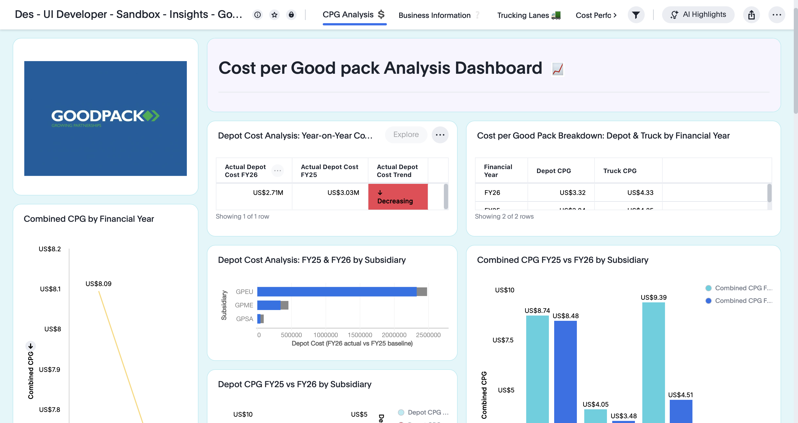
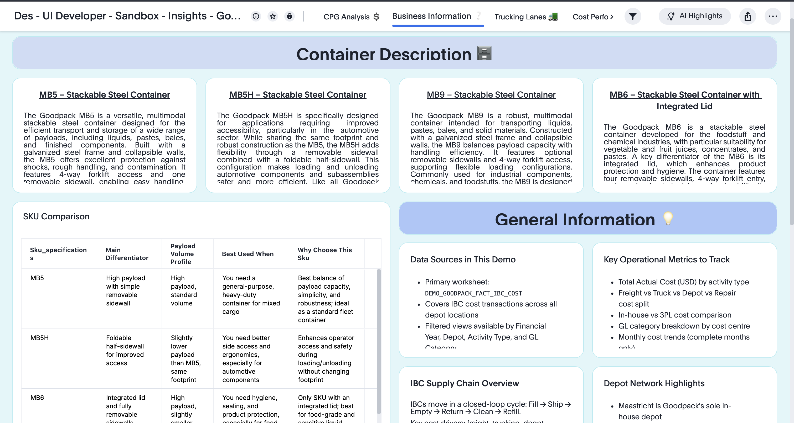
A few terms used in this report
- Board
- A ThoughtSpot dashboard: one page of charts and figures. ThoughtSpot calls this a Liveboard.
- Card
- A single box on a board holding one chart, table or block of text.
- Group
- A container that holds several related cards together under one title.
- Theme builder
- Where default styles (colours, text sizes and so on) are set. These styles should then apply to every board.
- Edit mode and view mode
- Edit mode is what we see while building a board. View mode is what everyone else sees. They should look the same; often they don’t.
At a glance
| Area | What we found | Status |
|---|---|---|
| Layout and grouping | Clearer in the theme builder, but only partly carries through to the saved board. The saved board looks little better than the original. | Partly carries through |
| Chart colours | Our colour palette is accepted in settings but has no effect on charts. | Doesn’t work |
| Group backgrounds | Visible while editing, disappear when the board is viewed. | Doesn’t carry through |
| Theme changes not kept | Changes in the theme builder only last until the page is refreshed or we’re logged out, and then some styling is lost. Workaround: keep an up-to-date exported JSON file and import it every time. | Workaround only |
| Spacing between cards | No setting to control it. More space would make boards look cleaner. | No control |
| Text line spacing | Too tight to read comfortably. A bullet-point workaround helps but indents the text. | Workaround only |
| Chart titles and subtitles | Can’t be removed, so need text written for them. | Limited control |
| Card and page titles | Colour, size, weight and padding only. A lighter weight looks a little cleaner. | Limited control |
| Different screen sizes | Unpredictable: gaps, oversized cards and cropped text. | Unreliable |
| Spotter Code | Could let us fix some of the above. Not yet switched on for us. | Not tested |
What we tried to improve
Layout and grouping Partly carries through
Our main aim was clearer structure. In the theme builder’s manual mode, we placed related charts and figures together inside clear containers, each with its own title. In the theme builder, this makes it much easier to see what belongs together (Figure 2).
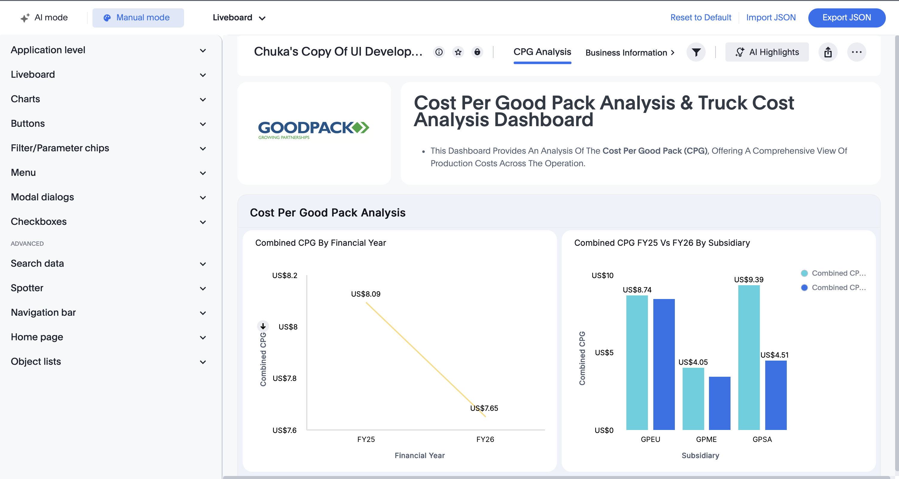
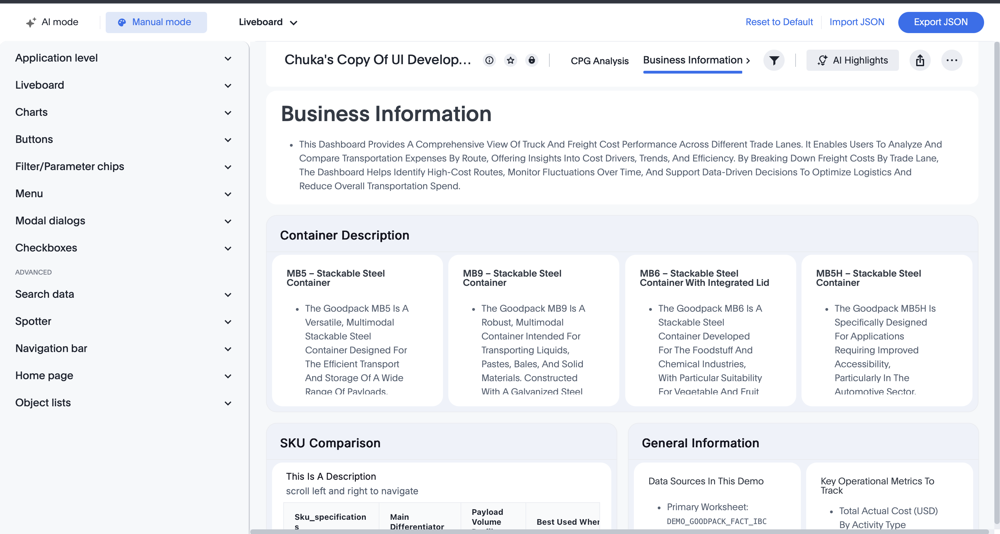
When the board is saved, only some of this carries through (Figure 3). The main loss is the group background colour, covered under group backgrounds below. As a result, the saved board doesn’t look much clearer than the original (Figure 1), so in practice the improvement is lost.
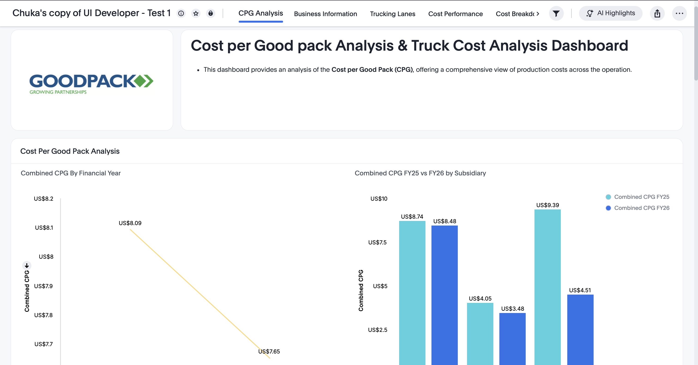
Card and page titles Limited control
For card titles and the main title at the top of the board, we can change the colour, the text size, the text weight and the padding around the text. Nothing else.
We reduced the weight of the text, which makes it look a little cleaner.
What’s getting in the way
These issues stop us finishing the work. Most are cases where a setting exists but doesn’t affect what users actually see.
Chart colours Doesn’t work
Charts use ThoughtSpot’s default colours. There is a setting where we can add our own colour palette (Figure 4), and we did. It made no difference to the charts on the board (Figure 5).
Our colours don’t even reach the theme, let alone the live board. As far as we can tell, the colour setting doesn’t work.
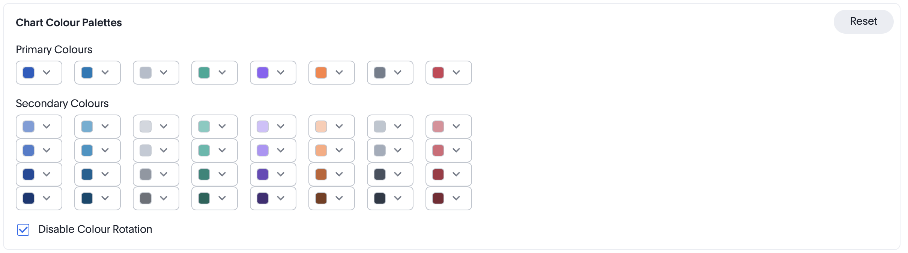
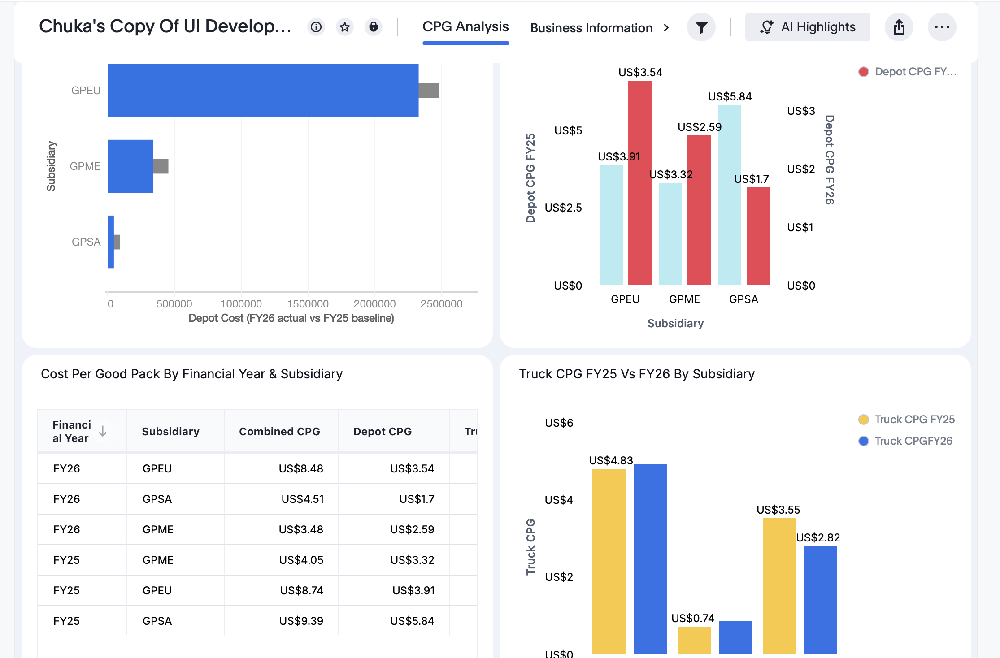
Group backgrounds disappear in view mode Doesn’t carry through
In edit mode, each group has a background colour that separates its cards from the rest of the board (Figure 6). This is what makes the grouping work visually.
In view mode, which is what everyone else sees, the grouping stays but the background colour is gone (Figure 7). The cards are left with awkward white space between them, and the sections are much harder to tell apart.
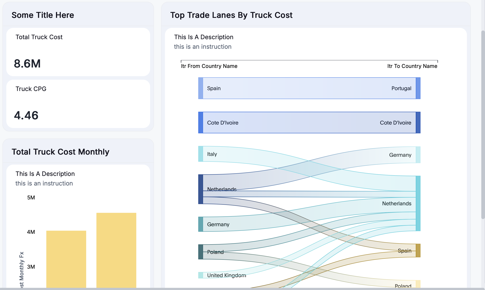
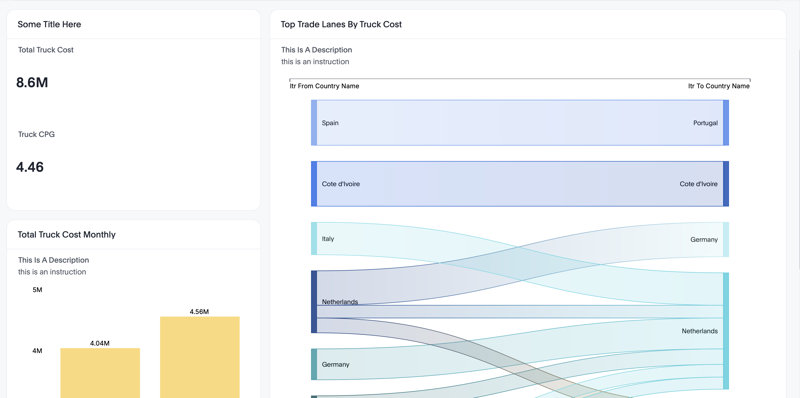
Theme changes aren’t kept Workaround only
Visual changes we make in the theme builder only last until the page is refreshed or we’re logged out. After that, some of the styling is lost and the board goes partly back to how it looked before.
To get around this, we keep an exported JSON file of the theme and update it after every change. Each time we come back to the theme builder, we have to import that file again to see the full styling. This works, but it’s easy to forget, and anyone without the latest file will lose changes.
Spacing between cards No control
We can’t change the space between cards. The default spacing isn’t wrong as such, but the cards sit close together (Figure 8). A little more space would make the board look cleaner and more appealing.
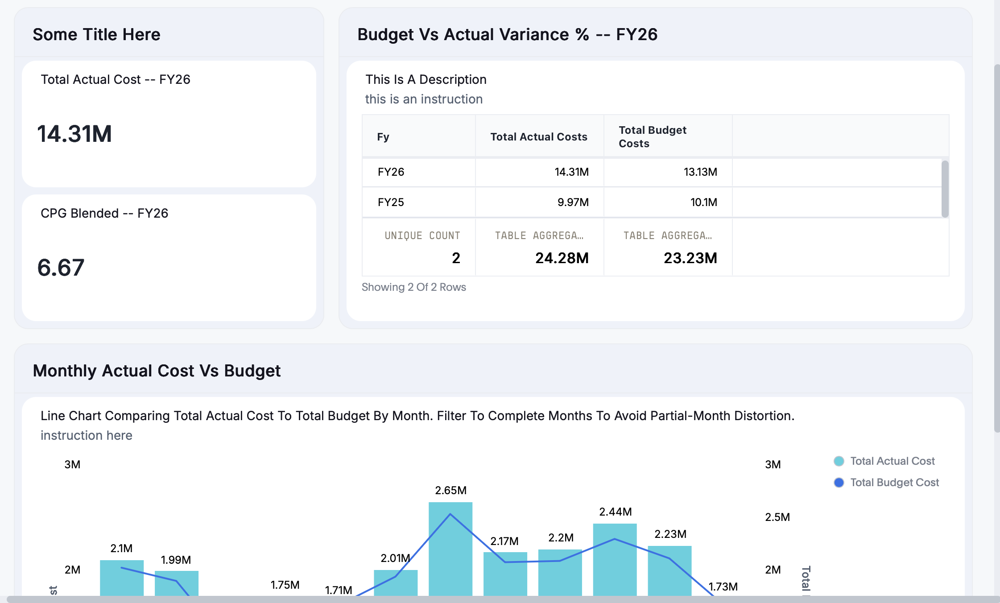
Text line spacing Workaround only
In blocks of text, the lines sit too close together. It looks untidy and is hard to read (Figure 9).
We found that turning the text into a bullet point adds more space between lines. It looks neater, but every line then has a bullet and the whole block is indented (Figure 10). That isn’t a real fix.
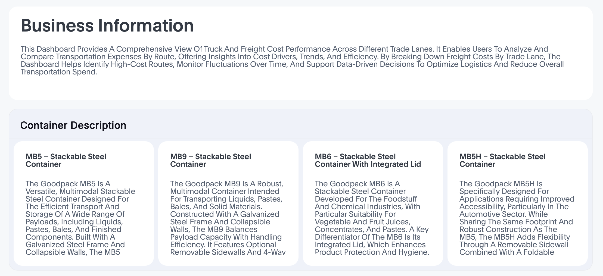
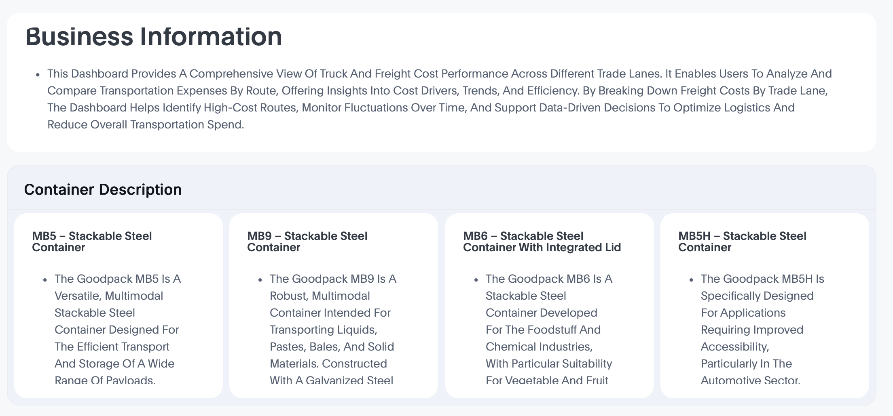
Chart titles and subtitles Limited control
Some charts come with their own title and subtitle, and these can’t be removed. When we place a chart inside a titled group, we end up with a title inside a title, and we have to write text for both (Figure 11).
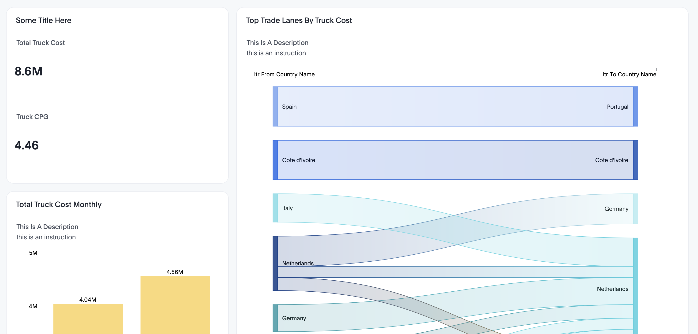
Different screen sizes Unreliable
Boards don’t adjust well to different screen sizes, or to people using a browser window that isn’t full screen.
At full desktop width, some cards stretch and end up with far too much empty space. At small, phone-like widths the layout is mostly fine. Between the two, roughly tablet to small laptop size, the layout becomes unpredictable. It can leave large random gaps and can even crop text (Figure 12).
We can’t realistically test every screen size people might use, so we can’t say with confidence what a given user will see.
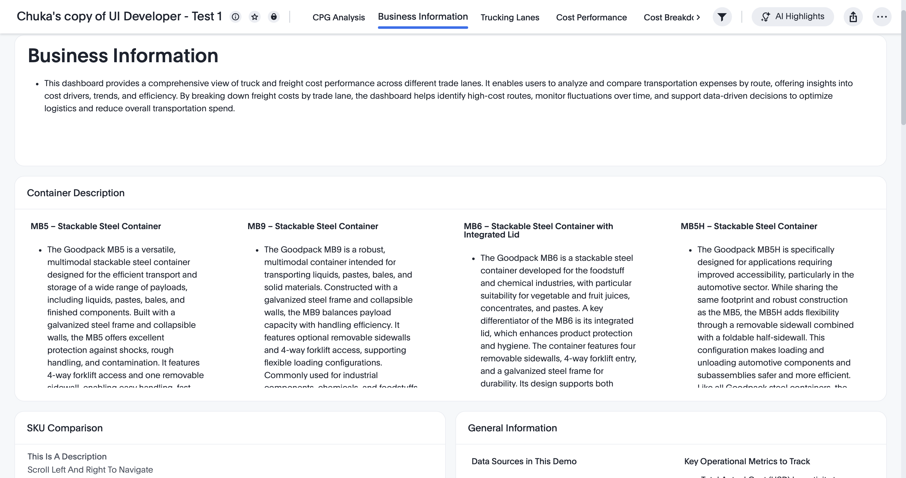
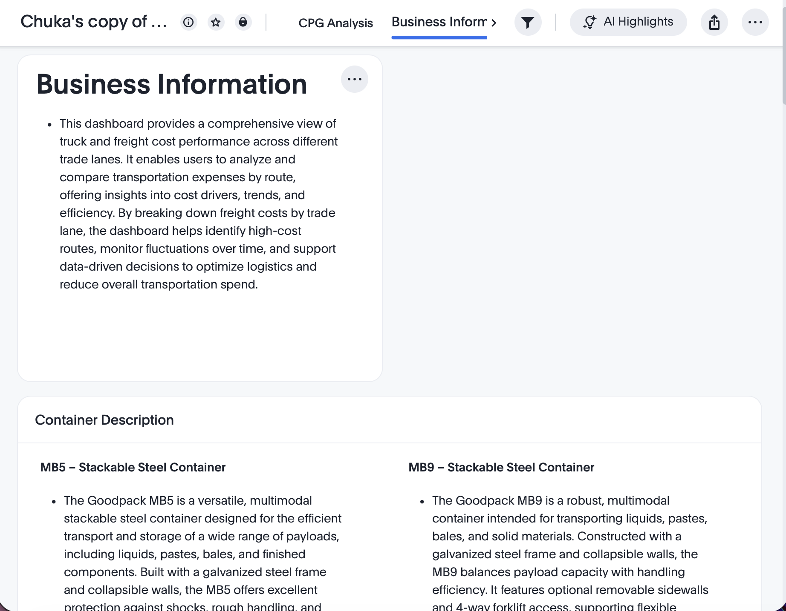
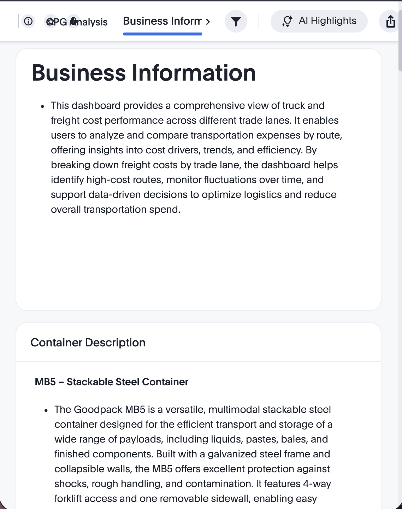
What we haven’t been able to test: Spotter Code Not tested
Spotter Code should, in theory, let us look at the code behind a board and adjust it by hand. That could get around some of the limits above.
We haven’t been able to try it. We first raised it with ThoughtSpot by email on 2 November 2026 (Figure 13), after our admin confirmed that the feature doesn’t appear for them either, despite having full admin access. They think it may not be enabled on our ThoughtSpot instance, or may not be included in our current licence.
We have been in touch with ThoughtSpot several times since, and they referred us to their customer services team, but it still hasn’t been switched on for our account.
Until we have access, we don’t know:
- what Spotter Code looks like or how easy it is to use
- whether changes made with it can be applied to a theme
- whether those changes would carry through to individual boards
- whether it would fix the colour, background, spacing or screen-size problems
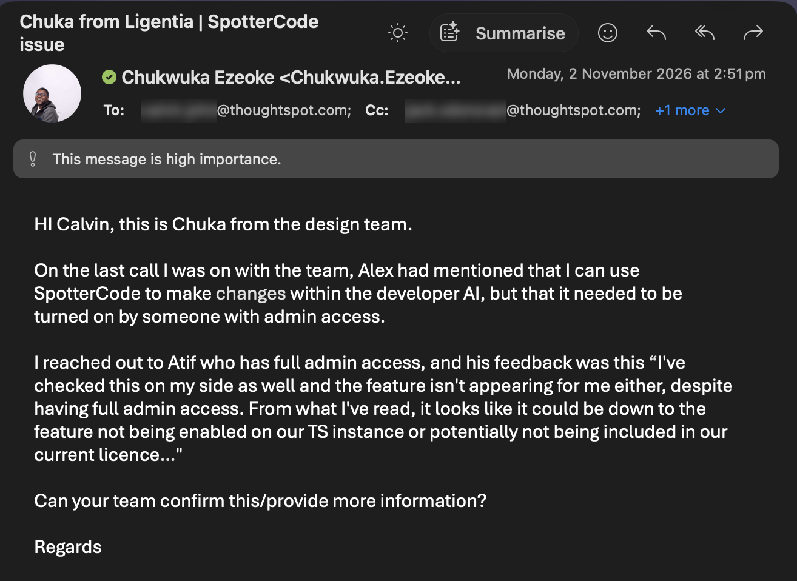
Where this leaves us
We can design a clearer, better organised board in the theme builder, but we can’t yet deliver it. Too little of the theming carries through to the saved board: colours don’t apply, group backgrounds disappear and layouts break at common screen sizes. As things stand, the boards people see are not noticeably better than the default.
Spotter Code is the main open question. It may solve some of these problems, or none of them. We won’t know until it’s switched on.